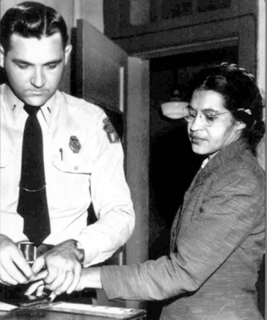
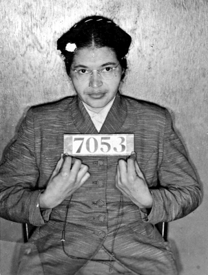
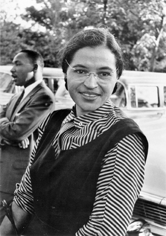
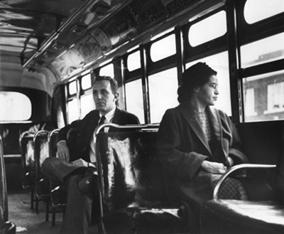
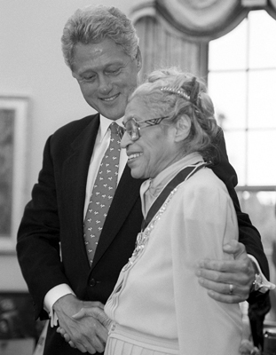
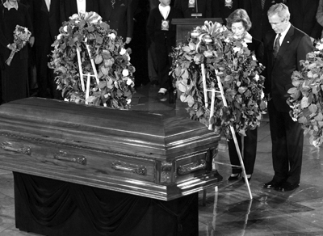

“Hissettiğim tek yorgunluk,
pes etmekten duyduğum yorgunluktu...”
Rosa Parks
1865’te sonra eren iç savaşın ardından Amerika’da kölelik kaldırılmıştı, ama ırk ayrımcılığının zihinlerde bıraktığı tortuların kaldırılması için 1900’lü yılların ortasına kadar beklenmesi gerekecekti. Ve üstelik bu, o kadar da kolay olmayacaktı. Olağanüstü şartların kendine özgü kahramanlar yarattığı biliniyordu ve gözler, ufukta belirecek, siyahların bu çileli yolculuğuna bir son verecek kahramana odaklanmıştı, ama galiba hiç kimse, böylesi birini beklemiyordu...
Yıl 1955’ti ve Amerika’nın Güney eyaletlerinde, ırk ayrımcılığı tüm hızıyla devam ediyordu. Hayatın her alanı, keskin bir bıçakla bölünmüştü adeta; büyük parça beyazlara, küçüğü ise siyahlara olmak üzere. Bu ayrımcılığın kendini en çok hissettirdiği yer ise kamusal alandı. Öyle ki siyahlar, toplu taşıma araçlarında bile istedikleri yerlere oturamıyorlardı. Sözgelimi, kahramanımızın yaşadığı Alabama Montgomery’de otobüslerin ilk sıraları beyazlara aitti. Yolcuların nerdeyse yüzde seksenini teşkil eden siyahlarsa, otobüs ve trenlerin arka tarafında, kendileri için ayrılmış renkli koltuklara oturabiliyorlardı. Beyazlarla aralarındaki mesafe, asla kapanmamalıydı! Üstelik beyazlar ayakta kaldığında ya yerlerini onlara vermek ya da otobüsten inmek zorundaydılar.
Aşağılama bununla da kalmıyordu. Ön kapıdan binip bilet paralarını ödüyor, ardından iniyor ve otobüse arka kapıdan biniyorlardı. Onur kırıcı bu döngü, sanki hiç kırılmayacakmış gibi görünüyordu. Ta ki 1 Aralık 1955’e, çıtı pıtı bünyesinde kocaman bir yürek barındıran Rosa Parks ‘Yeter artık!’ diyene kadar...
1 Aralık 1955... bir kadın siyahları ayağa kaldırıyor
Kadın otobüse bindi ve ürkek adımlarla kendilerine, yani siyahlara ayrılan koltuklara ilerledi. Beyazların koltuklarının bittiği yerde, ki otobüsün ortalarına denk geliyordu, onlarınki, yani sadece ve sadece derileri siyah olduğu için, beyaz ‘efendi’leri ile asırlar sonra da olsa aynı ortamda bulunmalarına izin verilen ama onların koltuklarına oturmalarına müsaade edilmeyen siyahların koltukları başlıyordu. Gitti, kendisi gibi bir siyahın yanına, otobüsteki son boş koltuğa oturdu. Hemen karşısında iki siyah kadın daha vardı.

Otobüsten indirilerek getirildiği polis merkezinde parmak izleri alınırken
Otobüs hareket etti. İlk iki durağı sorunsuz geçtiler. Üçüncü durakta, birkaç beyaz adam otobüse bindi. İçlerinden biri, beyazlara ait koltuklar dolduğu için ayakta kalmıştı. Şoför, küstah bakışlarla siyahların olduğu bölümü süzdü. Ve ardından, kendisini ürkek gözlerle izleyen siyahlara seslendi:
“Yerlerinizi beyazlara verin!”
Siyah yolculardan üçü, bir süre tereddüt etseler de, çaresiz bakışlarla, denileni yaptılar. Kahramanımız ise yerinden bile kıpırdamadı. Sonradan kendisinin dahi izah edemeyeceği bir cesaret gelmişti kalbine. İstifini bozmadığını gören şoför, yine seslendi:
“Yerinizden kalkın, yoksa sizi tutuklatmak zorunda kalacağım!”
Şoförün uyarısı boşlukta kaybolup gitti. Kadın halen yerinde oturmakta ısrar ediyordu. Belli belirsiz şekilde mırıldanabildi:
“İstediğinizi yapabilirsiniz, kalkmıyorum.”
Şoför motoru durdurdu ve öfkeyle arabadan indi. Madem bu siyah kadın, hâkim sisteme meydan okumuştu, o halde bedelini ödemeliydi! Birkaç siyah yolcu şoförü takip etti, beyazlarsa istiflerini bozmadan öylece kaldılar.
Şoför iki polisle geri dönmüş ve kadın sorguya alınmıştı:
“Şoför sizi yerinizi vermeniz için uyardı mı?”
“Evet bayım, uyardı.”
“Neden kalkmadınız peki?”
“Çünkü kalkmamı gerektiren bir sebep göremedim bayım. Hem söyler misiniz, neden kalkıp yerimi vermem gerekiyormuş, bunun mantığı nedir?”
“Kanun kanundur. Şu andan itibaren tutuklusunuz!”
Apar topar otobüsten indirilen kadın karakola götürüldü. Rosa Parks henüz nezarete atılmadan, tutuklandığı haberi dalga dalga yayılmıştı. Herkes büyük bir şaşkınlıkla bu kadının gösterdiği cesareti konuşuyordu. İlk kez bir siyah, üstelik de kadın olan bir siyah, beyaz ‘efendi’lerine yer vermeyi reddedip tutuklanmıştı!

Sabıka kaydı için fotoğrafı çekiliyor, Şubat 1956.
Siyahlar kiliselerde toplandı. Birbiri ardına eylem teklifleri gelmeye başlamıştı. Nihayetinde, olayın başladığı sahayı hedef alan bir eylemde karar kılındı: Siyahlar, toplu taşıma araçlarını boykot edeceklerdi.
Otobüs hadisesi, Dexter Avenue Baptist Kilisesi’nin genç papazı, daha sonradan Amerikalı siyahların kahramanı olacak Dr. Martin Luther King’in öncülüğünde Montgomery İyileştirme Birliği’nin (Montgomery Improvement Association) kurulmasına kapı aralayacaktı. Birlik, şehir belediyesine ait otobüslere dönük bir boykot çağrısı yaptı. Parks ve King’in öncülüğündeki boykot, hem ikiliyi hem de haklı davalarını dünya gündemine perçinleyecekti.

Rosa Parks ve Dr. Martin Luther King’in (arkada) başlattığı
otobüs boykotu tüm dünyada büyük ses getirdi.
Parks, sadece siyahların değil, aynı zamanda yaşadığı Montgomery’nin de önde gelen simalarından biriydi. Irk ayrımcılığına karşı tavrıyla, belli bir saygınlık kazanmıştı. Parks’ın uğradığı muamele, kitleleri dalgalanıyordu. Montgomery otobüs boykotu, kısa zamanda ses getirdi. Siyahlar, işe gitmek için ya bisiklete biniyor, ya topluca taksi tutuyor, o da olmazsa yürüyorlardı. Artık beyazlar tüm otobüslere binebilirdi!

Yüksek Mahkeme kararının ardından Rosa Park,
otobüsün ön kolturlarından birinde yolculuk ediyor.
Başlangıçta burunlarından kıl aldırmayan otobüs şirketleri, toplam yolcu kapasitelerinin yüzde seksenini oluşturan siyahların boykotu 382. gününe ulaşınca, teslim bayrağını çekmek zorunda kaldı. Aksi takdirde zaten hepsi iflas edecekti. Boykotun sonunda otobüslerdeki bu utanç verici uygulamalara son verildi.
Anayasa Mahkemesi de duruma daha fazla kayıtsız kalamadı ve Parks’ın cezalandırıldığı Montgomery düzenlemesini iptal ederek, kamu taşımacılığında ayrımcılık yapılmasının yasalara aykırı olduğu yönünde hüküm verdi. O tarihten sonra Amerika bir daha eskisi gibi olmayacak, siyahları hedef alan ayrımcı politikalar bir biri ardına kaldırılacaktı...
“Pes etmekten yorulmuştum...”
Marangoz baba James McCauley ile öğretmen anne Leona McCauley’in kızları olarak Rosa Louise McCauley, Alabama, Tuskegee’de doğmuştu. İki yaşındayken, annesi ve kız kardeşi ile birlikte, dedesinin Alabama, Pine Level’daki çiftliğine göçtü.
On bir yaşındayken başladığı Montgomery Kız Meslek Okulu, Kuzey Amerikalı liberal kadınlar tarafından kurulmuştu ve okulun “Her ne olursa olsun fırsatlardan istifade et” şeklindeki temel felsefesi, Parks’ın annesi Leona McCauley’in kızına verdiği telkinlerle bire bir örtüşüyordu. Lakin ortada öyle pek kaçırılmayacak fırsat falan da yoktu, en azından siyahlar için!
Parks, yıllar sonra vereceği bir mülakatta o günleri, “Aslında hiçbir sivil hakkımız yoktu. Önceliğimiz, hayatta kalmaktı. Geceleri uyumaya çalışırken evin etrafında naralar atan Klu Klux Klancıları duyar, evimizin ateşe verilmesi korkusu, uykularımızı kaçırırdı” sözleriyle anlatıyordu.
Zorluklarla sürdürdüğü eğitimi ise tam bir çile yumağıydı. Yine kendisi bu süreci, “Köleliğin kaldırılmasından 50 yıl sonra, 1913’te doğdum. Okumama izin veriliyordu, öğretmen olan annem çok küçük yaşta bana okumayı öğretti. İlkokulumuz çok küçük bir binaydı ve tüm öğrencilere sadece bir öğretmen bakıyordu. Hepimiz fakir ailelerin çocuklarıydık. Herkesin kalemi kitabı olmuyordu ama biz çocuklar olarak paylaşmayı bilirdik” diyerek ifade etmişti.
Alabama Öğretmen Okulu’nu bitiren Rosa, bu arada Raymond Parks ile evlenmiş ve Montgomery’ye yerleşmişti. Çift, bölgelerindeki bir kilisenin gönüllü kollarından birine üye olarak, bir süre, ayrımcılık mağduru siyahların hayatlarında elle tutulur iyileşmeler olması için çalışmalar yaptı. Ama tüm gayretlerine rağmen, bir arpa boyu yol aldıkları söylenemezdi: “Kilisede onlarca değişik çalışma yaptık, ama kimse sesimizi duymak istemiyordu. Dayak, borç karşılığı çalıştırma, cinayet ve tecavüz gibi vakalar sıradanlaşmıştı artık. Neredeyse tek yaptığımız, hâkim güçlere, artık ikinci sınıf vatandaşlar olarak yaşamak istemediğimizi söylemeye çalışmaktı.”

ABD eski Başkanı Clinton, 14 Eylül 1996’da Beyaz Saray’da ağırladığı
Parks’a Başkanlık Hürriyet Madalyası verdi.
Parks, tutuklanmasının ardından işini de kaybetmişti. 1957’de kocasıyla birlikte Detroit’e taşındı ve Temsilciler Meclisi Üyesi John Conyers’in sekreterliğini yaptı. Kocasının 1977’deki ölümünün ardından Rosa ve Raymond Parks Kişisel Gelişim Enstitüsü’nü kurdu. Kurum halen okul yaşındaki çocukları otobüslerle Amerika’nın dört bir yanında gezdirerek, Amerikan tarihi ve sivil haklar hareketi hakkındaki bilgilerini arttırmayı hedefliyor.
Emeklilik günlerinde mutlu olup olmadığı sorulduğunda, hayatını özgürlük ve eşitlik mücadelesine adamış bu asil kadın şöyle cevap veriyordu: “Hayata iyimserlikle bakabilmek için elimden geleni yapıyorum ama saf mutluluk gibi bir şey olduğunu sanmıyorum. Günümüzde bile Amerika’da Klan faaliyetleri ve ırkçılık olduğunu bilmek bana acı veriyor. Mutluyum diyorsanız, istediğiniz ya da ihtiyaç duyduğunuz her şeye sahipsiniz demektir. Ben henüz o aşamaya ulaşamadım.”
Daha sonra o aşamaya ulaştı mı bilinmez ama Parks, 2005’te, 92 yaşında Detroit’te hayata veda ettiğinde, geride insan hakları mücadelesine dair görkemli bir miras bırakıyordu. Bir lütufmuş gibi kabul edildikleri otobüslerin arka sıralarında başlayan hayat yolculuğunu, insani değerlerin en ön koltuğunda oturarak tamamlamıştı.
Ölümünden birkaç yıl önce verdiği bir röportajda, ses getiren eylemini yaptığı o gün yorgun olduğu iddialarının dile getirilmesi üzerine çok kızmış ve belki de tüm mücadele felsefesini özetleyen şu cümleler dökülmüştü ağzından:
“İnsanlar sürekli o gün yorgun olduğum için yerimi vermediğimi söylüyorlar, ama bu doğru değil. Yorgun değildim, ya da genelde bir iş günü sonunda olduğumdan daha yorgun değildim. Yaşlı da değildim. Bazıları o zamanlar yaşlıymışım gibi bir hava yaratıyorlar, 42 yaşındaydım. Tek bir yorgunluğum vardı; pes etmekten yorulmuştum.”
Ölümünün ardından kasketi, iki gün boyunca Washington’daki Hükümet Meclisi binasının kubbesine asıldı. Böylelikle Amerikan ulusu, cesaretiyle birçok insanın hayat çizgisini değiştiren bu kadını kendince selamlamış oluyordu. Üstelik Parks’ın naaşı, Meclis Binası’nda da sergilendi ki, bu sadece Amerikan Başkanları için yapılan bir uygulamaydı.

30 Ekim 2005, Başkan G. W. Bush, Parks’ı son yolculuğuna uğurluyor.
Belki de onu tanımlayan en güzel cümleyi, cenazesine katılan Amerikan eski Başkanlarından Bill Clinton sarf etmişti:
“Rosa, herkesin özgür olması gerektiğini görmemizi sağladı.”
NOTLAR